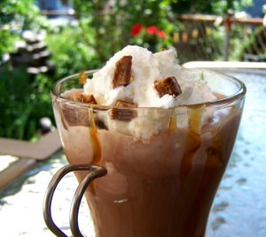
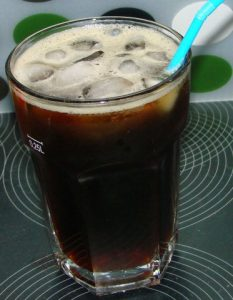
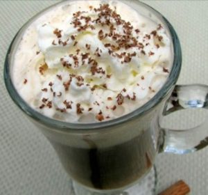

Ingredients
- 4 ounces coffee mocha ice cream
- 6 ounces hot coffee
- 2 tablespoons butterscotch topping
- 2 teaspoons almond liqueur
- whipped topping
- 1 tablespoon toffee pieces or 1 tablespoon chopped chocolate-covered English toffee bar
Directions
- Spoon ice cream into a large coffee mug; pour coffee, butterscotch topping and almond liqueur over ice cream.
- Garnish with a dollop of whipped cream and sprinkle of toffee chips.
Thai Iced Coffee

Ingredients
- very strong black regular grind coffee, sufficient to brew 4 cups (or select a brand of coffee ground with cardamom)

- 4 tablespoons sugar
- 4 tablespoons heavy cream
- 2 teaspoons ground cardamom
- 1 teaspoon almond flavoring
- crushed ice
Directions
- Add the cardamom to the ground coffee, and brew the coffee; when the coffee is brewed, add the sugar and almond flavoring, mix well and then let the coffee cool to lukewarm.
- Fill four 12 ounce highball glasses half-way to the rim with crushed ice and then fill two-thirds full with coffee; into each glass, stir about 1 tablespoon of heavy cream.
- To achieve a layered effect, hold a spoon on top of the coffee and pour the cream slowly into the spoon so that the cream floats on top of the glass over the coffee.
Black Magic

Ingredients
- 10 ounces hot black coffee (freshly brewed)
- 1⁄4 teaspoon chocolate extract (or to taste)
- 1⁄4 teaspoon hazelnut extract (or to taste)
- 1⁄4 teaspoon rum extract (or to taste)
- Sugar or Sugar substitute
Directions
- Pour fresh coffee into mug.
- Add the extracts and Sweeten to taste.
- Stir and enjoy!
Steaming Mocha Cocoa

Ingredients
- 2 cups milk
- 2 tablespoons cocoa
- 2 tablespoons brown sugar
- 1 tablespoon ground coffee
- 1 teaspoon vanilla extract
Directions
- Heat all ingredients in a small saucepan and whisk until steaming.
- Strain and pour into 2 mugs.
Turkish Coffee

Ingredients
- 1 cup water
- 1 tablespoon of extra fine ground coffee (powder consistency)
- 1⁄8 teaspoon ground cardamom or 1 cardamom pod
- sugar (optional)
Directions

- Bring water and sugar to a boil in ibrik.
- If you do not have an ibrik, a small saucepan will work.
- Remove from heat, add coffee and cardamom.
- Return saucepan to heat and allow to come to a boil.
- Remove from heat when coffee foams.
- Again, return to heat, allowing to foam and remove from heat.
- Pour into cup, and allow to sit for a few minutes for the grounds to settle to the bottom of the cup.
- Cardamom pod may be served in cup for added flavor.
Tips
- Turkish coffee must always be served with foam on top.
- If you can’t find finely ground Arabic coffee, you can purchase a right here.
- Do not stir after pouring into cups; the foam will collapse.
- Always use cold water.

Creamy Iced Vanilla Caramel Coffee

Ingredients
- 4 cups Cold Brew coffee (cold or room temperature)
- 1 cup milk
- 1⁄3 cup French Vanilla non-dairy coffee creamer
- 1⁄4 cup caramel ice cream topping (or more to taste)
- 3 cups crushed ice
- canned whipped cream (optional)
Directions
- Place all ingredients into blender and blend on high until the ice is completely smooth. Pour into four glasses and top with a dollop of whipped cream.
- Serve immediately.
Red Eye

Ingredients
- 1 ounce espresso
- 1 cup hot coffee
Directions
Combine in a glass.
Gingerbread Coffee

Ingredients
- 3 tablespoons coffee beans, coarse ground
- 1 teaspoon ground cinnamon
- 1⁄4 teaspoon ground nutmeg
- 1⁄8 teaspoon ground allspice
- 1⁄2 teaspoon ground ginger
- 1 tablespoon molasses
- boiling water
- milk, hot
Directions
- Put all ingredients, except water and milk, into a 12 oz. press pot. Add boiling water. Stir with chopstick or handle of wooden spoon.

- Put lid on pot and brew 4 minutes.
- Press plunger and pour coffee into large cup.
- Add hot milk to taste.
- To make with drip coffee: Brew coffee and stir in spices and molasses. Strain into cup.
Iced Espresso Marvo

Ingredients
- 1 cup espresso, chilled
- sparkling water
- crushed ice
- sugar (or Splenda as or if desired)
Directions
- Pour espresso over ice in a tall glass.
- Fill the remainder of the glass with mineral water.
- Sweeten as and if you like.
- Give a quick stir and serve.
Coffee Imperial

Ingredients
- 4 cinnamon sticks
- 6 cups strong coffee, freshly brewed
- 1⁄2 cup heavy cream
- sugar; to taste
- crushed ice
- whipped cream
- ground cinnamon
Directions
- Add cinnamon sticks to hot coffee and let stand for 1 hour, then remove cinnamon.
- To coffee add sugar to taste and the heavy cream, then chill.
- Pour mixture into tall glasses and fill with ice, top with whipped cream and a sprinkle of cinnamon.
No Sugar Added Iced Coffee

Ingredients
- 2 cups strong coffee
- 1⁄2 cup 2% milk (or regular if you prefer)
- 1⁄2 cup sweetened condensed milk
- 4 cups ice cubes
- whipped cream, to garnish (optional)
Directions
- Combine all the ingredients in food processor or blender.
- Blend until smooth.
- Top with a bit of whipped cream if you want to indulge.
Peppermint Patty Coffee

Ingredients
- 8 ounces brewed coffee
- 2 tablespoons powdered cocoa mix
- 1⁄2 teaspoon peppermint extract
- 2 teaspoons sugar
- 2 ounces skim milk
Directions
- Put all dry ingredients in bottom of mug and pour in hot coffee.
- Stir to dissolve sugar and cocoa mix.
- Add in extract and milk and stir again.
Brown Sugar & Caramel Latte

Ingredients
- 1 tablespoon brown sugar
- 1⁄4 cup half n half
- 1 tablespoon caramel ice cream topping
- 3⁄4 cup hot brewed Columbian coffee
Directions
- Stir brown sugar into half-and-half until dissolved.
- Whip with a milk frother or small whisk.

3. Pour coffee into a mug, and stir in caramel sauce until dissolved.
4. Pour frothed half-and-half into coffee, and serve.
Instant Coffee Espresso

Ingredients
- 1 1⁄2 teaspoons Nescafe instant coffee (or depending on taste as to how strong you like your coffee)
- 1⁄2 cup milk
- 1⁄2 cup water, plus a few drops for pre-mixing
- 2 teaspoons sugar (or to taste)
- cinnamon (optional)
- drinking cocoa powder
Directions
- Put the coffee powder and sugar in a coffee mug.
- Add a few drops of water (just enough to incorporate the coffee powder in to form a thick paste) Stir vigorously with a spoon and soon you will see that the coffee and sugar form a whitish shiny paste.
- Boil the milk and water together.
- (if you do not like milky coffee you can boil plain water (1 cup) and add a few drops of milk just to your taste straight into the mug) Pour this from a little height into the mug so that the coffee froths up.
- Sprinkle a little drinking chocolate on top for effect.
- You can sprinkle some cinnamon powder on top too if you like the flavor of cinnamon.
Mexican Coffee

Ingredients
- 1 ounce Kahlua
- 1⁄2 ounce Brandy Liquor
- 1 teaspoon chocolate syrup
- 1 dash ground cinnamon
- hot coffee
- sweetened whipped cream
Directions
- Place Kahlúa, brandy, chocolate syrup and cinnamon in a coffee cup or mug.
- Fill with hot coffee.
- Stir to blend.
- Top with sweetened whipped cream.